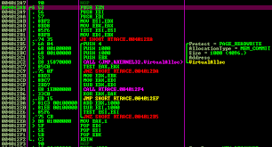

Learn and Share
What is information security
Information security, sometimes shortened to InfoSec, is the practice of preventing unauthorized access, use, disclosure, disruption, modification, inspection, recording or destruction of information. It is a general term that can be used regardless of the form the data may take (e.g. electronic, physical)
System Administrator

Quản trị viên hệ thống (system administrator hoặc sysadmin) là người chịu trách nhiệm cho việc bảo trì, cấu hình và duy trì hoạt động của hệ thống máy tính, máy chủ (servers) của doanh nghiệp hoặc tổ chức…
Web Pentest
Là hình thức kiểm tra hệ thống CNTT (website) của bạn có thể bị tấn công hay không, bằng cách giả lập các vụ tấn công thử nghiệm tạo ra. Có thể hiểu một cách đơn giản Penetration Testing ( Pentest ) chính là đánh giá độ an toàn bằng cách tấn công vào hệ thống . Vulnerability Assessment là quá trình xem xét lại các dịch vụ và hệ thống để tìm ra các vấn đề an ninh tiềm tàng hoặc dò tìm các dấu vết khi hệ thống bị tổn thương. Người thực hiện một thử nghiệm xâm nhập được gọi là kiểm tra xâm nhập hoặc pentester.
Software Engineering
Công nghệ phần mềm hay kỹ nghệ phần mềm (tiếng Anh: software engineering) là sự áp dụng một cách tiếp cận có hệ thống, có kỷ luật, và định lượng được cho việc phát triển, sử dụng và bảo trì phần mềm. Ngành học kỹ nghệ phần mềm bao trùm kiến thức, các công cụ, và các phương pháp cho việc định nghĩa yêu cầu phần mềm, và thực hiện các tác vụ thiết kế, xây dựng, kiểm thử (software testing), và bảo trì phần mềm
Reverse Engineering
Kỹ nghệ đảo ngược hay công nghệ đảo ngược (tiếng Anh: reverse engineering) là quá trình tìm ra các nguyên lý kỹ thuật của một phần mềm ứng dụng hay thiết bị cơ khí qua việc phân tích cấu trúc, chức năng và hoạt động của nó. Trong quá trình này, người ta thường phải tháo dỡ đối tượng (ví dụ một thiết bị cơ khí, một thành phần điện tử, một phần mềm) thành từng phần và phân tích chi tiết hoạt động của nó, thường là với mục đích xây dựng một thiết bị hoặc phần mềm mới hoạt động giống hệt nhưng không sao chép bất cứ thứ gì từ đối tượng nguyên bản.